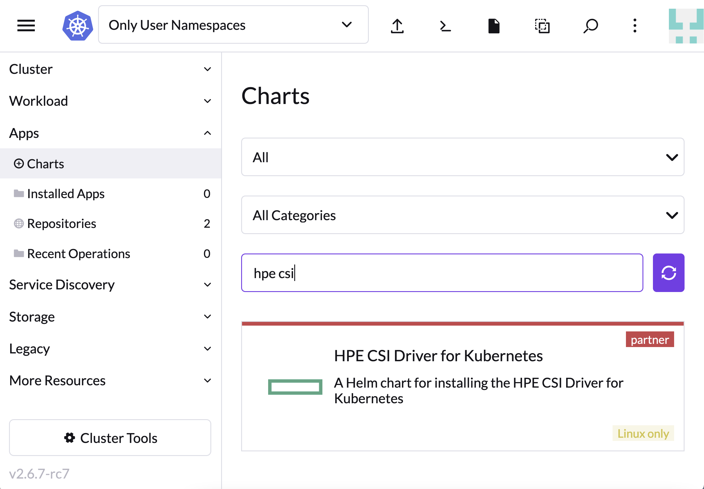
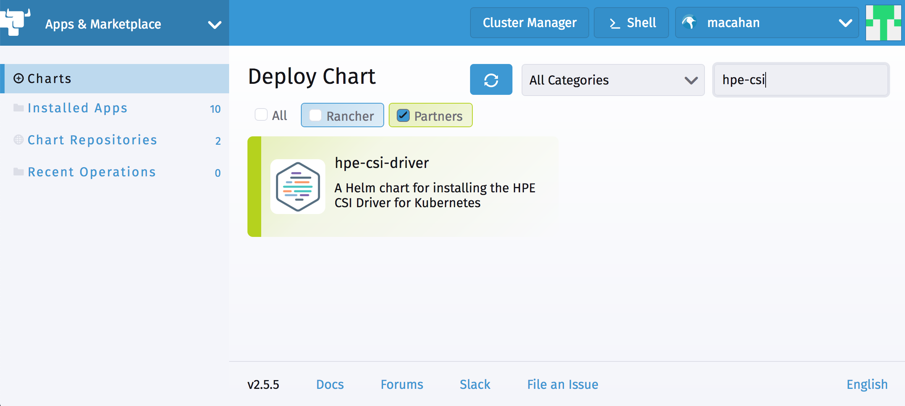
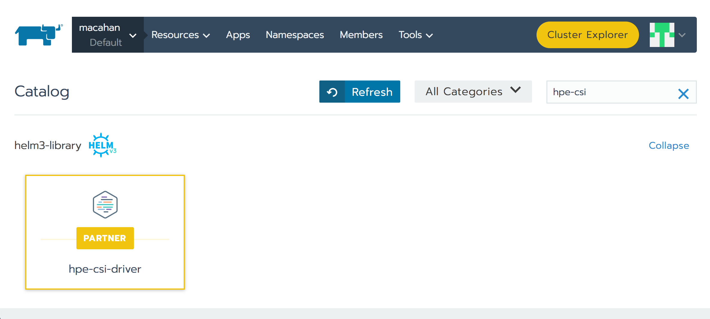

Overview¶
SUSE Rancher provides a platform to deploy Kubernetes-as-a-service everywhere. HPE partners with SUSE Rancher to provide effortless management of the CSI driver on managed Kubernetes clusters. This allows our joint customers and channel partners to enable hybrid cloud stateful workloads on Kubernetes.
Deployment considerations¶
Rancher is capable of managing Kubernetes across a broad spectrum of managed and BYO clusters. It's important to understand that the HPE CSI Driver for Kubernetes does not support the same amount of combinations Rancher does. Consult the support matrix on the CSI driver overview page for the supported combinations of the HPE CSI Driver, Kubernetes and supported node operating systems.
Supported versions¶
Rancher uses Helm to deploy and manage partner software. The concept of a Helm repository in Rancher is organized under "Apps" in the Rancher UI. The HPE CSI Driver for Kubernetes is a partner solution present in the official Partner repository.
| Rancher release | Install methods | Recommended CSI driver |
|---|---|---|
| 2.5 | Cluster Manager, Cluster Explorer | latest |
| 2.6 | New Cluster Manager | latest |
Tip
Learn more about Helm Charts and Apps in the Rancher documentation.
HPE CSI Driver for Kubernetes¶
The HPE CSI Driver is part of the official Partner repository in Rancher. The CSI driver is deployed on managed Kubernetes clusters like any ordinary "App" in Rancher.
Note
In Rancher 2.5 an "Apps & Marketplace" component was introduced in the new "Cluster Explorer" interface. This is the new interface moving forward. Upcoming releases of the HPE CSI Driver for Kubernetes will only support installation via "Apps & Marketplace".
Rancher Cluster Manger (2.6 and newer)¶
Navigate to "Apps" and select "Charts", search for "HPE CSI".
 Rancher Cluster Explorer
Rancher Cluster Explorer (2.5)¶
In Rancher 2.5, the "Apps & Marketplace" in the "Cluster Explorer" may be used to install the HPE CSI Driver. This is recommended for new installs.
 Rancher Cluster Explorer
Rancher Cluster Manager (2.4 and older)¶
In Rancher 2.5 and earlier, the "Apps" interface is the default method of installing the HPE CSI Driver.
 Rancher Cluster Manager
Note
Installing the CSI driver with default parameters (simply hit "Launch" in the UIs) is the most common deployment option. Please see the official Helm chart documentation for supported parameters.
Rancher CLI install¶
Switch to the project you want to install the CSI driver. For this example, the default project on a managed cluster is being used.
Important
The Rancher CLI does not support "Apps & Marketplace" introduced in 2.5 yet. Use the web interface or REST API to deploy the CSI driver instead.
$ rancher context current
Cluster:torta Project:Default
Steps to install the CSI driver.
$ rancher app install hpe-csi-driver hpe-csi-driver --no-prompt
run "app show-notes hpe-csi-driver" to view app notes once app is ready
$ rancher app
ID NAME STATE CATALOG TEMPLATE VERSION
p-k28xd:hpe-csi-driver hpe-csi-driver active helm3-library hpe-csi-driver 1.3.1
Note
This is installs the driver with the default parameters which is the most common deployment option. Please see the official Helm chart documentation for supported parameters.
Post install steps¶
For Rancher workloads to make use of persistent storage from HPE, a supported backend needs to be configured along with a StorageClass. These procedures are generic regardless of Kubernetes distribution being used.
- Go ahead and add an HPE storage backend
HPE Volume Driver for Kubernetes FlexVolume plugin¶
Only use the FlexVolume driver for Kubernetes 1.12 and below. The FlexVolume driver is provided as a Helm v2 chart in the official Rancher Catalog. Parameters are very specific to the environment to where the driver is being installed to. Please follow the steps in the FlexVolume Helm chart documentation for further guidance. Also understand that the FlexVolume driver only supports HPE Nimble Storage and HPE Cloud Volumes.
Caution
The FlexVolume driver is being deprecated. Reach out to your HPE representative if you think deploying the FlexVolume driver on your Rancher managed Kubernetes cluster is the correct course of action.